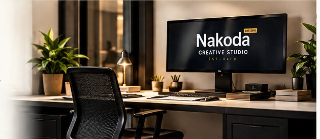

Understand first
We start with the business, audience and goal—not just the visual style.
Nakoda Creative Studio helps businesses communicate clearly through thoughtful design and practical digital solutions.
Meet Us Through Your Project ↗
Founded in 2018, NCS was built around a simple belief: good creative work should help a business explain what it does, present itself with confidence and make the next step easier for customers.
We work across different business types—from product-led companies to local service providers—adapting the solution to the need rather than forcing every business into the same formula.
We start with the business, audience and goal—not just the visual style.
Design should work in the places customers actually encounter your brand.
Every touchpoint should feel connected, from print to digital.